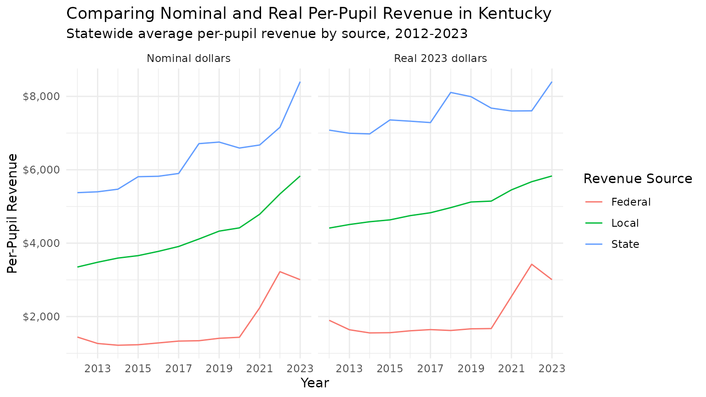
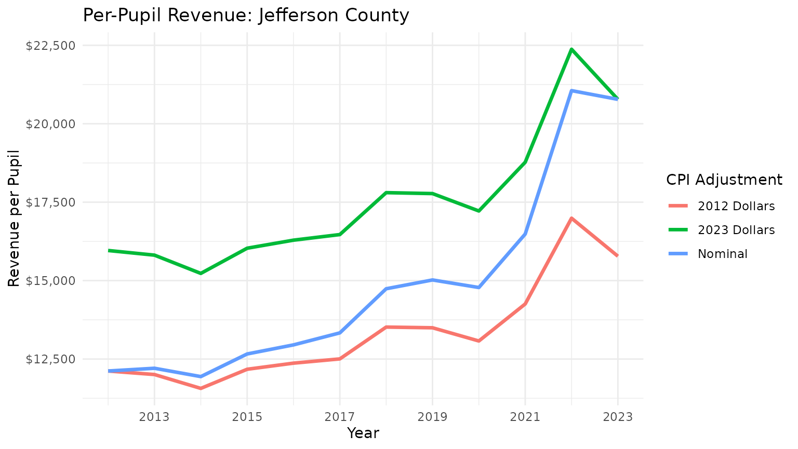

Introduction
When analyzing education finance data across multiple years,
adjusting for inflation can help produce more meaningful comparisons.
edfinr provides built-in functionality to adjust
dollar-denominated flows (revenues, expenditures, and income measures)
for inflation using the Consumer Price Index for All Urban Consumers
(CPI-U). See “What gets adjusted” below for the exact scope.
Understanding nominal vs. real dollars
By default, all financial data returned by
get_finance_data() is in nominal dollars -
the actual dollar amounts reported in each year without any inflation
adjustment. This means that $1,000 in 2012 and $1,000 in 2023 are
treated as equal amounts, even though they have different purchasing
power.
To make valid comparisons across years, you need to convert to real dollars (also called constant dollars) by adjusting for inflation.
How CPI adjustment works
edfinr uses the CPI-U index to adjust for inflation. The
adjustment is aligned to the school year calendar:
- Each school year’s CPI is calculated by averaging:
- The second half of the first calendar year (July-December).
- The first half of the second calendar year (January-June).
For example, the 2022-23 school year CPI combines:
- July-December 2022 (HALF2 2022).
- January-June 2023 (HALF1 2023).
Using the cpi_adj parameter
The get_finance_data() function includes a
cpi_adj parameter to automatically adjust
dollar-denominated flows:
# Get nominal (unadjusted) data - this is the default
nominal_data <- get_finance_data(yr = "2016:2023", geo = "KY")
# View the nominal revenue for a specific district
nominal_data |>
filter(dist_name == "Jefferson County") |>
select(year, dist_name, rev_total, rev_total_pp)## # A tibble: 8 × 4
## year dist_name rev_total rev_total_pp
## <int> <chr> <dbl> <dbl>
## 1 2016 Jefferson County 1305189000 12951.
## 2 2017 Jefferson County 1330902000 13334.
## 3 2018 Jefferson County 1456303000 14740.
## 4 2019 Jefferson County 1471098000 15021.
## 5 2020 Jefferson County 1483158000 14780.
## 6 2021 Jefferson County 1581097000 16485.
## 7 2022 Jefferson County 1987477000 21055.
## 8 2023 Jefferson County 1978591000 20777.
# Get data adjusted to 2023 dollars
real_2023_data <- get_finance_data(yr = "2016:2023", geo = "KY", cpi_adj = 2023)
# View the same district with inflation-adjusted values
real_2023_data |>
filter(dist_name == "Jefferson County") |>
select(year, dist_name, rev_total, rev_total_pp)## # A tibble: 8 × 4
## year dist_name rev_total rev_total_pp
## <int> <chr> <dbl> <dbl>
## 1 2016 Jefferson County 1641585061. 16289.
## 2 2017 Jefferson County 1643689872. 16468.
## 3 2018 Jefferson County 1758916408. 17803.
## 4 2019 Jefferson County 1740708930. 17774.
## 5 2020 Jefferson County 1727951432. 17220.
## 6 2021 Jefferson County 1800611608. 18774.
## 7 2022 Jefferson County 2111933476. 22374.
## 8 2023 Jefferson County 1978591000 20777.When cpi_adj is set, the returned data also includes a
cpi_adj_index column showing the multiplier applied to each
row:
## # A tibble: 8 × 2
## year cpi_adj_index
## <int> <dbl>
## 1 2016 1.26
## 2 2017 1.24
## 3 2018 1.21
## 4 2019 1.18
## 5 2020 1.17
## 6 2021 1.14
## 7 2022 1.06
## 8 2023 1What gets adjusted
When you use cpi_adj, dollar-denominated
flows are automatically adjusted for inflation:
- All revenue variables (total, local, state, federal; adjusted and unadjusted, totals and per-pupil).
- Current and capital expenditure flows, including
exp_cap_total, its detailed components, andexp_debt_interest. - Median and mean household income and median property value.
Variables that are NOT adjusted include:
- Enrollment counts, demographic percentages, and any ratio or rate variables.
-
Debt and fund-balance stocks (
debt_*,fund_bal_*). These are balance-sheet levels measured at a point in time, not annual flows.edfinrleaves them in nominal dollars by design: debt is owed and repaid in nominal terms, and deflating stocks alongside flows invites accidental mixing of the two. Restating them in base-year dollars is a legitimate analysis choice; if yours calls for it, apply the deflator yourself. - The CWIFT teacher-wage index
(
cwift_est). It is a relative labor-cost index, not a dollar amount, and is never CPI-adjusted (see the “CWIFT” article on the package website).
The flows-vs-stocks rule is easy to verify: the capital outlay flow scales, while the debt stock is identical with and without adjustment.
raw <- get_finance_data(yr = "2019", geo = "KY", dataset_type = "full")
adj <- get_finance_data(yr = "2019", geo = "KY", dataset_type = "full", cpi_adj = "2023")
# capital outlay (a flow) is scaled up to 2023 dollars
head(adj$exp_cap_total / raw$exp_cap_total, 3)## [1] 1.183272 1.183272 1.183272
# long-term debt outstanding (a stock) is identical in both
identical(adj$debt_lt_end, raw$debt_lt_end)## [1] TRUEWorking with the CPI index
Every dataset includes a cpi_sy12 column that shows the
CPI index relative to the 2011-12 school year:
# Examine the CPI index values
cpi_values <- get_finance_data(yr = "all", geo = "KY") |>
select(year, cpi_sy12) |>
distinct() |>
arrange(year)
print(cpi_values)## # A tibble: 12 × 2
## year cpi_sy12
## <int> <dbl>
## 1 2012 1
## 2 2013 1.02
## 3 2014 1.03
## 4 2015 1.04
## 5 2016 1.05
## 6 2017 1.07
## 7 2018 1.09
## 8 2019 1.11
## 9 2020 1.13
## 10 2021 1.16
## 11 2022 1.24
## 12 2023 1.32
# Calculate cumulative inflation since 2012
cpi_values |>
mutate(
inflation_since_2012 = (cpi_sy12 - 1) * 100,
inflation_label = paste0(round(inflation_since_2012, 1), "%")
)## # A tibble: 12 × 4
## year cpi_sy12 inflation_since_2012 inflation_label
## <int> <dbl> <dbl> <chr>
## 1 2012 1 0 0%
## 2 2013 1.02 1.66 1.7%
## 3 2014 1.03 3.25 3.3%
## 4 2015 1.04 4.00 4%
## 5 2016 1.05 4.71 4.7%
## 6 2017 1.07 6.63 6.6%
## 7 2018 1.09 9.04 9%
## 8 2019 1.11 11.3 11.3%
## 9 2020 1.13 13.0 13%
## 10 2021 1.16 15.6 15.6%
## 11 2022 1.24 23.9 23.9%
## 12 2023 1.32 31.7 31.7%Practical example: tracking real spending over time
Here’s how to analyze whether education revenue has kept pace with inflation:
# get multiyear data in nominal dollars
ky_nominal <- get_finance_data(yr = "all", geo = "KY", cpi_adj = "none") |>
mutate(type = "Nominal dollars")
# get multi-year data adjusted to 2023 dollars
ky_real <- get_finance_data(yr = "all", geo = "KY", cpi_adj = "2023") |>
mutate(type = "Real 2023 dollars")
# join data
ky_data <- bind_rows(ky_nominal, ky_real)
# calculate statewide per-pupil revenue trends for real dollars
rev_trends <- ky_data |>
group_by(type, year) |>
summarize(
rev_local = sum(rev_local, na.rm = TRUE),
rev_state = sum(rev_state, na.rm = TRUE),
rev_fed = sum(rev_fed, na.rm = TRUE),
enroll = sum(enroll, na.rm = TRUE)
) |>
mutate(
rev_local_pp = rev_local / enroll,
rev_state_pp = rev_state / enroll,
rev_fed_pp = rev_fed / enroll
) |>
select(type, year, rev_local_pp:rev_fed_pp) |>
pivot_longer(
cols = rev_local_pp:rev_fed_pp,
names_to = "var", values_to = "val") |>
mutate(
var = str_remove_all(var, "rev_"),
var = str_remove_all(var, "_pp"),
var = str_to_title(var),
var = str_replace_all(var, "Fed", "Federal")
)
# plot trends
ggplot(rev_trends) +
geom_line(
aes(x = year, y = val, color = var)
) +
facet_wrap(~type) +
scale_x_continuous(breaks = seq(2013, 2023, 2)) +
scale_y_continuous(labels = scales::label_dollar()) +
labs(
title = "Comparing Nominal and Real Per-Pupil Revenue in Kentucky",
subtitle = "Statewide average per-pupil revenue by source, 2012-2023",
x = "Year",
y = "Per-Pupil Revenue",
color = "Revenue Source"
) +
theme_minimal()
Choosing a base year
You can adjust to any year from 2012 to 2023. Common choices include:
- Most recent year (e.g., 2023): Shows all values in current dollar terms.
- First year of analysis: Makes it easy to see percentage changes from baseline.
- Midpoint year: Minimizes the size of adjustments across the time series.
# select ky district to assess
district_sample <- "Jefferson County"
# get data with nominal dollars and cpi-adjusted for different base years
nominal <- get_finance_data(yr = "2012:2023", geo = "KY") |>
filter(dist_name == district_sample) |>
select(year, rev_total_pp) |>
mutate(type = "Nominal")
adjusted_2012 <- get_finance_data(yr = "2012:2023", geo = "KY", cpi_adj = 2012) |>
filter(dist_name == district_sample) |>
select(year, rev_total_pp) |>
mutate(type = "2012 Dollars")
adjusted_2023 <- get_finance_data(yr = "2012:2023", geo = "KY", cpi_adj = 2023) |>
filter(dist_name == district_sample) |>
select(year, rev_total_pp) |>
mutate(type = "2023 Dollars")
# join and plot data
bind_rows(nominal, adjusted_2012, adjusted_2023) |>
ggplot(aes(x = year, y = rev_total_pp, color = type)) +
geom_line(linewidth = 1.2) +
scale_x_continuous(breaks = seq(2013, 2023, 2)) +
scale_y_continuous(labels = scales::label_dollar()) +
labs(
title = paste("Per-Pupil Revenue:", district_sample),
x = "Year",
y = "Revenue per Pupil",
color = "CPI Adjustment"
) +
theme_minimal()
Best practices
Use inflation adjustment for multi-year analyses: Comparing nominal dollars across years can be misleading.
Be consistent with your base year: Use the same
cpi_adjvalue for all data in an analysis.Document your choice: Always note whether values are nominal or real, and which base year you used.
Consider your audience: Current dollars (most recent year) are often most intuitive for general audiences.
Technical notes
- The CPI data comes from the U.S. Bureau of Labor Statistics CPI-U series.
- School year alignment ensures the index matches the academic calendar.
- Total and per-pupil columns are scaled by the same
cpi_adj_index, so adjusted per-pupil values equal adjusted totals divided by enrollment. - The
cpi_sy12column is always included regardless of adjustment choice. - If the
cpi_adjbaseline year falls outside the requestedyrrange, that year’s file is downloaded to source the baseline and then dropped from the returned data.
See also
- The “Basic usage of edfinr” vignette for an overview of
get_finance_data(). - On the package website: the “CWIFT” article for adjusting across places rather than years, and the “Capital and Facilities” article for the flows-vs-stocks distinction in practice.